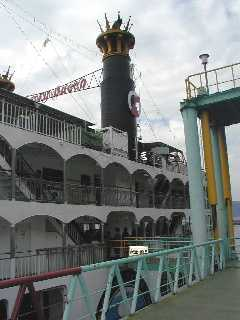

| ☆ＰＡＲＴ３ | |
| ほどなくして烏島展望所に到着。 |
|
| 七世「烏島、この下に」 第二チェックポイント、クリアー！ |
|
| 展望所からの風景です。 記念に大正溶岩を採集して持って帰りました。 |
|
| ラスト、第三チェックポイントオープン！ 七世「えんぴつの芯旅行？」 日本初の新婚旅行の銅像を目指します。 |
|
|  | フェリーで鹿児島に戻り、 坂本龍馬の銅像があるという与次郎ヶ浜へ直行！ ・・・と思ったのですが、どのバスに乗るのかわからず、 西鹿児島駅行きのバスに乗ってしまいました。はわわ！ 熊ちゃんたちが第一チェックポイントの聞きこみをしていた 駅前の観光案内所でおばさんに行き方を聞いて、 バスに乗り込みました。 いよいよ大詰め、某ドラマのテーマがガンガン鳴り響くところです。 |
| 駅前から「鴨池港ゆき」のバスに乗り、「熱帯植物園」で下車。 バス停からすぐのところに「坂本龍馬新婚の旅碑」はありました。 |
|
 |
これでゴール、終了です。 時計の針は午後４時３０分。 途中温泉に入ったり、寄り道していたら スタートから７時間以上もかかってしまいました。 熊ちゃんとちーちゃんが行った仙巌園と水族館にも 行って見たかったんですが、ちょっとムリでした。 おしまい。 |